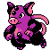

#408
Grumpig
Updated typingPsychic
Thick FatUps resistance to Fire and Ice.
Own TempoPrevents it from becoming confused.
PranksterHidden abilityGives priority to a status move.
Original vs Updated
Original uses modern main-game values. Updated uses Crimson Crystal’s changes. Choose typings and base stats separately when starting a new game. Abilities, moves and evolution changes apply to both choices.
Original
Psychic
Updated
Psychic
Base stats
| Stat | Original | Updated | Change |
|---|---|---|---|
| HP | 80 | 80 | — |
| Attack | 45 | 45 | — |
| Defense | 65 | 65 | — |
| Sp. Atk | 90 | 100 | +10 |
| Sp. Def | 110 | 110 | — |
| Speed | 80 | 80 | — |
| Total | 470 | 480 | +10 |
Evolution
Evolves from Spoink — Level 32
Training & breeding
- Catch rate
- 60 / 255
- Base experience
- 165
- Wild held items
- None
- Gender ratio
- 50% male, 50% female
- Egg groups
- Field
- Hatch time
- 20 egg cycles (~5,120 steps)
- Growth rate
- Fast
Level-up moves
LevelMoveTypeCat.PowerAcc.
TM / HM moves 17
TM / HMMoveTypeCat.PowerAcc.